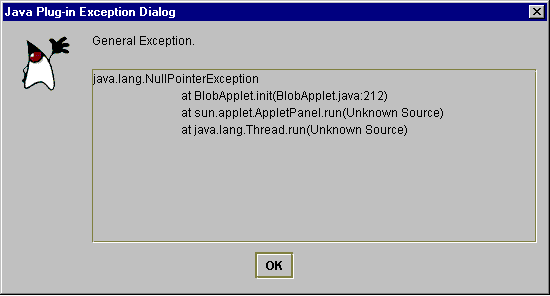
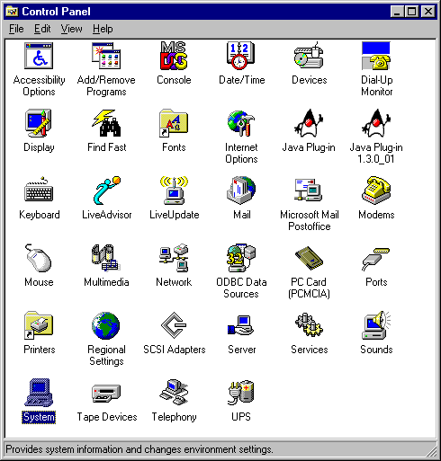
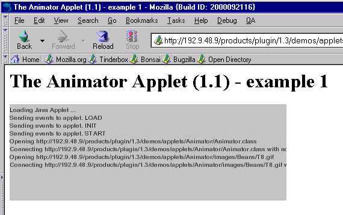

Copyright © 2000 Sun Microsystems, Inc. All Rights Reserved.
Please send comments to: java-plugin-feedback@java.sun.comJava Software
This section discusses usability enhancements made to Java Plug-in
beginning with the Java
2 Standard Edition 1.3.0_01 release. Most are aimed at making applet debugging
easier.
All messages are displayed in a dialog box with a unified look and feel. This includes error, warning and general messages. The following is an example of a null pointer exception dialog:

Much more information about error conditions is reported in this release of Java Plug-in. Previously, most errors failed silently, which made debugging difficult.
Error condition handling is provided for the following:
In the previous version of Java Plug-in, when an applet threw an exception
the Java Console had to be open to view the stack trace. In this release, even
when the Java Console is not opened, Java Plug-in shows a dialog box with all
exception detail whenever there is an exception in an applet's init(),
start(), stop()or destroy() method. This
feature is disabled by default but can be turned on by checking the "Track
Lifecycle Exception" check box in the Basic Tab of the Java Plug-in Control
Panel.
The Java Plug-in Control Panel is accessed through the Windows Control Panel, as shown below:

Note the two versions of the Java Plug-in shown above.
Double-click the icon for the version of Java Plug-in whose Control Panel you want to view. The Java Plug-in Control Panel looks like this:
The following enhancements have been made to the Java Console:
The Java Console in the previous Java Plug-in used an AWT implementation. However,
when many messages were displayed, they often flooded the Console window, and
the native AWT widget was unable to handle the task. In this version, the Java
Console has been converted to Swing to eliminate the problem.
In the previous version of Java Plug-in, Java Console provided only a simple
way to show System.out and System.err for debugging
of applets. This was inadequate. The new version provides the
options as shown below in the Java Console:
An action/option is selected by typing its letter/number while the Java Console window has focus.
|
Key
|
Description
|
| c: | Clears the Java Console window. |
| f: | Triggers finalization on the objects in the finalization queue and then displays memory information. Memory refers to the current heap size used by the JRE. Free is the available memory that is free in the heap. The percent (xx%) is the free memory as a percent of the total heap size. |
| g: | Triggers garbage collection and displays memory information as described above. |
| h: | Displays help message, which is being described here. |
| l: | Displays a list of the cached ClassLoader objects in the
Java Plug-in. (These are runtime objects and should not be confused with
the cached JAR files mentioned at the end of this chapter.) Classes are
cached to avoid having to load them again when returning to previously-visited
pages. When a page is visited the first time, a ClassLoader
object will be created and all of the classes that are downloaded will be
cached in that object. These objects are created and cached according to
their codebase. To identify a ClassLoader object,
the "classloader list" displays the codebase for
that object. Additional information displayed with a ClassLoader
object includes zombie, cache and info.
zombie = true indicates that a ClassLoader object
is not being used (i.e., the applet is not currently loaded on the page).
cache = true indicates that the applet should be cached, while
false indicates that the applet will be destroyed when the
page is left. info is a value used for debugging. |
| m: | Displays heap memory usage as described above. |
| q: | Causes the Java Console to disapper from the main screen. |
| s: | Prints out the system properties. This is mostly for debugging. |
| t: | Prints out all the existing thread groups. The first group shown is Group
main. ac stands for active count; it is the total
number of active threads in a thread group and its child thread groups.
agc stands for active group count; it is the number
of active child thread groups of a thread group. pri stands
for priority; it is the priority of a thread group. Following Group
main, other thread groups will be shown as Group <name>,
where name is the URL associated with an applet. Individual listings
of threads will show the thread name, the thread priority, alive
if the thread is alive or destroyed if the thread is in the
process of being destroyed, and daemon if the thread is a daemon
thread. |
| x: | This removes (destroys) all ClassLoader objects in the cache. |
| 0-5: | This sets the trace-level options as described below under Enhanced Java Plug-in Tracing. |
When Java Plug-in is running an icon is now displayed — in the taskbar for Windows or on the desktop for Solaris. When clicked, the Java Console opens. This allows the user to open and close the Java Console any number of times within the same browser session. The Java Plug-in version may also be checked from the icon in the Windows taskbar. This enhancement applies to both Netscape and Internet Explorer.
In the previous version of Java Plug-in, tracing could be turned on by enabling
the property javaplugin.trace. However, it turned on all tracing
facilities inside Java Plug-in, and messages often flooded the Java Console.
In this version, tracing control is more fine-grained. A new property,
javaplugin.trace.option, has been introduced. You can set trace-level
options (0-5) in the Java Console, shown above,
with the following meanings:
This enables tracing on the fly.
Another way to set fine-grained tracing is through the Java Plug-in Control Panel, also shown above. For instance, to enable tracing for everthing (option 5 above), enter the following in the "Java Run Time Parameters" textfield:
-Djavaplugin.trace=true
-Djavaplugin.trace.option=basic|net|security|ext|liveconnect
Tracing set through the Control Panel will take effect when the Plug-in is launched, but changes made through the Control Panel while a Plug-in is running will have no effect.
Previous to this release, applet status reporting was minimal in the applet
display area (gray box) of the browser. This enhancement provides much more
detail about what is happening (init() method being called, JAR downloading,
...). This will not only aid developers in applet debugging but keep
users better informed about applet status. For example, shown below is applet
status reporting for Sun's Animator Applet as it loads:

Applet progress status is shown in a non-blocking fashion, making the browser UI more responsive.
With the JAR caching feature (available since 1.3), redundant downloads can be avoided and applets can be run offline. But since a user may want to delete the cached files at some time, an option exists in the Java Plug-in Control Panel for deleting the cached files. A user can push the "Clear JAR Cache" button to delete the JAR cache.
|
Copyright © 2000 Sun Microsystems, Inc. All Rights Reserved. Please send comments to: java-plugin-feedback@java.sun.com |
Java Software |